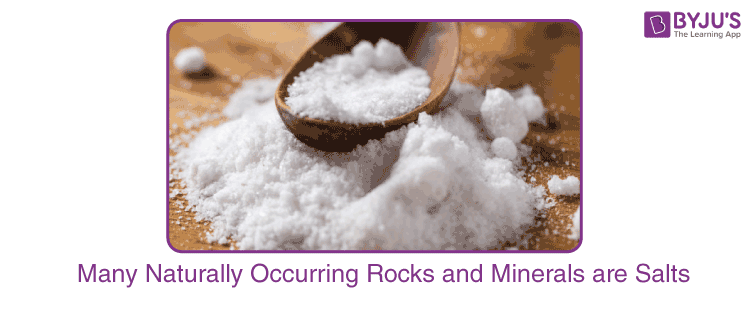

Man has been exposed to changing surroundings ever since he came into existence. He has been quite interested in learning about his surroundings and studying and explaining the things that are happening around him. He has conducted experiments and observations to gather information as a result of his interest. Through the decades, it has also been in charge of many people’s research endeavours around the globe. Systematizing and organising the knowledge acquired in this way was absolutely necessary for the good of humanity. Science is the name given to this knowledge. So, systematised knowledge that humans have acquired through observations and experimentation may be referred to as science. Due to its vast expansion and variety of subjects, science has been further divided into many branches. One of the most significant fields of science is chemistry. Chemistry can be summed up as the area of science that studies matter, including its properties, composition, and the changes that occur to it as a result of various activities. Several branches of chemistry have been created based on the specialised disciplines of research.
Chemistry is a subdiscipline of science that deals with the study of matter and the substances that constitute it. It also deals with the properties of these substances and the reactions undergone by them to form new substances. Chemistry primarily focuses on atoms, ions, and molecules which, in turn, make up elements and compounds. These chemical species tend to interact with each other through chemical bonds. It is important to note that the interactions between matter and energy are also studied in the field of chemistry. The study of elements and compounds’ properties, compositions, and structures, as well as how they can change and the energy that is released or absorbed during such changes, is the subject matter of the science known as chemistry.
‘Science’ can be defined as the systematic study of the natural universe, its structure, and everything it encompasses. Due to the immensity of the natural universe, science has been divided into several disciplines that deal with certain aspects of the universe. The three primary subcategories of science under which these disciplines can be grouped are:
When the relationships between the major branches of science are considered, chemistry is found to lie close to the centre (as illustrated below).
Thus, chemistry can be viewed as a central science whose roots bore into several other subdisciplines of science.
The four primary branches of chemistry are physical chemistry, organic chemistry, inorganic chemistry, analytical chemistry. Follow the buttons provided below to learn more about each individual branch.


Apart from these primary branches, there exist several specialized fields of chemistry that deal with cross-disciplinary matters. Some such examples include medicinal chemistry, neurochemistry, materials chemistry, nuclear chemistry, environmental chemistry, polymer chemistry, and thermochemistry.
Chemical reactions are constantly taking place around us. The human body facilitates thousands of chemical reactions every day. From the digestion of food to the movement of muscles – all bodily actions involve chemical reactions. A few other examples of chemistry in the day-to-day lives of humans are listed below.
The term acid is derived from a Latin word ‘acidus’ or ‘acere’, which means sour. The most common characteristic is their sour taste. An acid is a substance that renders ionizable hydronium ion in its aqueous solution. It turns blue litmus paper red. These dissociate in their aqueous solution to form their constituent ions, as given by the following examples.
H+Cl-
H2SO4(aq)->2H++SO4 2-

| Acid Base Salt Properties Chart | |||
|---|---|---|---|
| Property | Acid | Base | Salt |
| Definition | Tastes sour and releases H⁺ ions in water | Tastes bitter and releases OH⁻ ions in water | Formed by neutralization of acid and base |
| Litmus Test | Turns blue litmus red | Turns red litmus blue | No change in litmus |
| pH Value | Less than 7 | Greater than 7 | Around 7 (neutral) |
| Examples | HCl, H₂SO₄ | NaOH, KOH | NaCl, KNO₃ |
| Chemistry Important Questions to These Standards: |
|---|